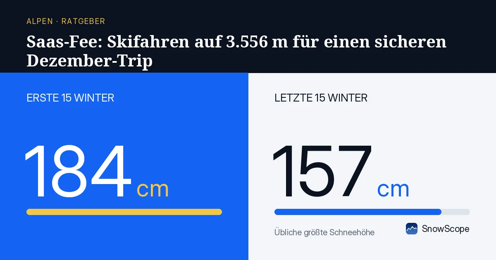

Saas-Fee: Skifahren auf 3.556 m für einen sicheren Dezember-Trip
In Saas-Fee gab es in 100 % der vergangenen Winter bis Mitte Dezember mindestens 30 cm Schnee am Gipfel. Wenn du einen Trip suchst, bei dem der Schnee sicher ist, musst du auf die Höhe der Lifte achten. Dieser Ort erreicht 3.556 m, einer der höchsten Punkte zum Skifahren in der Schweiz.
Die Live-Schneeprognose für Saas-Fee in der SnowScope-AppSchneehöhen, Pulverschnee-Alarme und 3D-Karte, gratis.
Eine Leiter der Höhen vom Dorf bis zum Gipfel
Das Skigebiet in Saas-Fee ist wie eine Leiter gebaut, die sehr hoch in die kalte Luft führt. Der unterste Lift startet auf 1.780 m im Dorf, und der höchste Lift erreicht 3.556 m. Das gibt dem Ort einen gesamten Höhenunterschied von 1.776 m. Es gibt insgesamt 30 Lifte und das Skigebiet umfasst 48 km Pisten. Weil der Ort so hoch liegt, ändert sich die Schneehöhe stark, je höher du kommst.
An der Basis der Lifte liegt die übliche Dezember-Tiefe bei 34 cm. Wenn du zur Mittelstation auf 2.668 m aufsteigst, steigt diese übliche Tiefe auf 68 cm. Ganz oben liegt die übliche Tiefe für Dezember bei 159 cm. In einem schneereichen Dezember kann der Gipfel bis zu 254 cm haben, während selbst ein dünner Dezember meist 69 cm auf dieser Höhe bietet. Dieser Höhenunterschied ist der Hauptgrund, warum das Gebiet offen bleibt, wenn tiefere Orte Probleme bekommen könnten.

Dezember-Wochen und Schneewahrscheinlichkeit
Unsere Schnee-Historie aus 46 vergangenen Wintern zeigt, dass der Zeitpunkt deines Trips für die unteren Pisten wichtig ist. Während der ersten Dezemberwoche, vom 1. bis 7. Dezember, hatten nur 33 % der vergangenen Winter 30 cm oder mehr Schnee an der Basis. Diese Zahl steigt auf 5 von 10 Wintern für die zweite Woche. Zum Ende des Monats, vom 22. bis 28. Dezember, liegt die Chance auf 30 cm an der Basis bei 85 %.
Wenn du auf die Mittelstation auf 2.668 m schaust, sind die Zahlen viel stabiler. In der ersten Woche des Monats haben 8 von 10 Wintern mindestens 30 cm Schnee. Das steigt auf etwa 9 von 10 Wintern für die zweite Woche. Am Gipfel der Lifte ist der Schnee fast garantiert. Ab dem 8.-14. Dezember hatten 100 % der vergangenen Winter in unseren Aufzeichnungen mindestens 30 cm Schnee auf 3.556 m.
Skipass-Preise in Schweizer Franken
Wir haben die Kosten auf der offiziellen Seite für die Wintersaison 2026-27 geprüft. Ein Erwachsenen-Tagesticket für Saas-Fee und Saas-Almagell kostet CHF 86. Wenn du einen längeren Aufenthalt planst, kostet ein 6-Tage-Pass für Erwachsene CHF 419. Diese Preise gelten für Skifahrer ab 20 Jahren.
Diese Preise spiegeln die große Höhe und das gebotene Liftsystem wider. Obwohl die Schweiz oft als teuer gilt, sind diese offiziellen Preise für die gesamte Wintersaison festgesetzt. Es ist wichtig, über die offizielle Seite zu buchen, um diese speziellen Raten für den Winter 2026-27 zu erhalten.
Saas-Fee oder Grimentz-Zinal
Wenn du dir andere Optionen in der Region Wallis ansiehst, ist Grimentz-Zinal eine starke Alternative. Die Preise dort sind niedriger, ein 1-Tages-Pass Val d'Anniviers für Erwachsene kostet CHF 75,00 und ein 6-Tage-Pass CHF 339,00. Grimentz-Zinal hat auch ein größeres Skigebiet mit 71 km Pisten und 23 Liften.
Allerdings ist der Höhenunterschied bedeutend. Der höchste Lift in Grimentz-Zinal liegt auf 2.873 m, was niedriger ist als der Mittelpunkt von Saas-Fee. In einem üblichen Dezember hat der Gipfel von Grimentz-Zinal 99 cm Schnee, während Saas-Fee 159 cm auf dem Gipfel hat. Wenn du der Kälte folgst, bietet die zusätzliche Höhe in Saas-Fee mehr Schneesicherheit. Die übliche Tiefe am 15. Dezember an der Basis von Grimentz-Zinal beträgt 29 cm, verglichen mit 34 cm in Saas-Fee.
Ein langfristiger Blick auf Schneetrends
In unserer Schnee-Historie von 46 vergangenen Wintern sehen wir, wie sich die Durchschnittswerte verändert haben. Am Gipfel der Lifte lag der Dezember-Durchschnitt bei 166 cm während der ersten 15 Winter von 1980-81 bis 1994-95. In den letzten 15 Wintern von 2011-12 bis 2025-26 lag dieser Durchschnitt bei 139 cm. An der Mittelstation sank der Durchschnitt von 70 cm auf 63 cm. Interessanterweise blieb die Basis in beiden Zeiträumen bei 32 cm.
Wenn wir auf die aktuelle Saison schauen, liegt der Schnee jetzt am 13. November 2026 bei 0 cm an der Basis und 27 cm am Gipfel. Die Prognose für die nächsten 7 Tage ist vielversprechend, mit 34 cm Neuschnee an der Basis und 80 cm am Gipfel erwartet. Der zweiwöchige Ausblick für die Mittelstation und darüber zeigt eine Spanne von 35 cm bis 70 cm Neuschnee. Das zeigt, wie schnell sich der Berg ändern kann, wenn wir in den Dezember gehen.
Tipps für Skifahrer
- Bleib für die sichersten Schneebedingungen Anfang Dezember oberhalb der Mittelstation auf 2.668 m.
- Buche deinen Trip für die Woche vom 22.-28. Dezember, wenn du eine 85 % Chance auf mindestens 30 cm Schnee auf Dorfebene möchtest.
- Prüfe den Lawinenlagebericht, bevor du abseits der Pisten fährst, besonders in großen Höhen.
- Kaufe den 6-Tage-Pass für Saas-Fee und Saas-Almagell für CHF 419 auf der offiziellen Seite für das beste Preis-Leistungs-Verhältnis.
Weitere Karten (externe Seiten)
Quellen und Nachweise
- Saas-Fee/Saastal, official ski pass prices 2026-27 www.saas-fee.ch/en/winter-in-the-saas-valley/ski-pass-prices/saas-fee
- Val d'Anniviers tourism, official ski pass prices 2026-27 www.valdanniviers.ch/fr/Z33617/tarifs-ski-grimentz-zinal
- SnowScope, December snow at three heights and today's snow map snowscope.app/
Zu diesen Zahlen
Schneewerte: SnowScope-Schneehistorie, 46 vergangene Winter (1980-81 bis 2025-26) auf drei Höhen jedes Skigebiets (ein höhenkorrigiertes Modell der Vergangenheit: eine Schätzung für eine Fläche, keine Messungen des Skigebiets); Dezemberwerte aus den täglichen Schneehöhen dieser Winter. Aktueller Schnee und Zwei-Wochen-Ausblick: SnowScope-Prognosen (Ausblick aus ECMWF und GFS, eine Spanne, kein Versprechen). Lifte und Pisten: OpenSkiMap-Kartierung. Preise: die offiziellen Seiten unten, gelesen am 2026-11-13; Preise können sich ändern, vor der Buchung prüfen.
Offizielle Lawinenlageberichte: SLF – WSL Institute for Snow and Avalanche Research
Diesen Bericht zitieren
Für Forschung, Lehre oder Presse: Zahlen und Grafiken sind unter CC BY 4.0 mit dieser Quellenangabe frei nutzbar.
SnowScope (2026), Saas-Fee: Skifahren auf 3.556 m für einen sicheren Dezember-Trip, https://snowscope.app/blog/de/2026/11/saas-fee-december-ski-value-high-altitude-2026.html, abgerufen am 2026-11-14
SnowScope (Atlas Labs). (2026, November 14). Saas-Fee: Skifahren auf 3.556 m für einen sicheren Dezember-Trip. SnowScope snow reports. https://snowscope.app/blog/de/2026/11/saas-fee-december-ski-value-high-altitude-2026.html
BibTeX
@misc{snowscope2026saasfeedecemberskivalueh,
author = {{SnowScope (Atlas Labs)}},
title = {Saas-Fee: Skifahren auf 3.556 m für einen sicheren Dezember-Trip},
year = {2026},
month = nov,
howpublished = {\url{https://snowscope.app/blog/de/2026/11/saas-fee-december-ski-value-high-altitude-2026.html}},
note = {Published 2026-11-14 13:29 UTC; accessed 2026-11-14}
}· CC BY 4.0 · Methoden, Daten und Werkzeuge →
Saas-Fee: Schnee und Temperatur nach Höhe, dieser Winter vs letzter (Werkzeuge) →
Saas-Fee folgen
Gratis: eine Nachricht, wenn Neuschnee kommt, und jeden Morgen die Vorhersage.